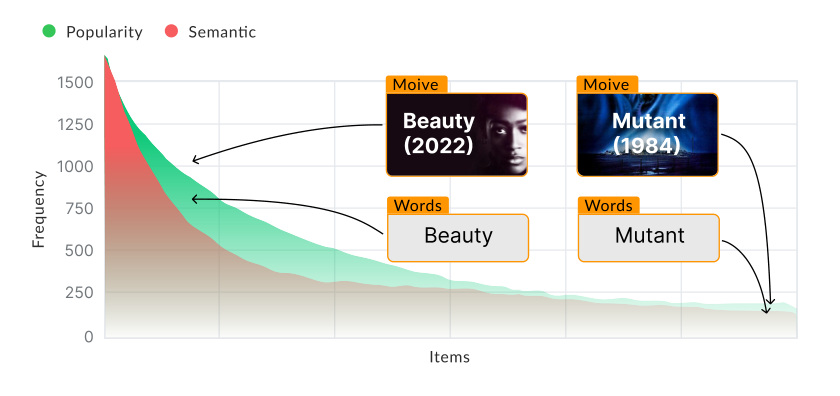
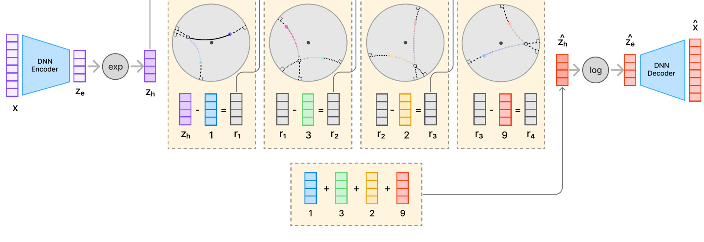
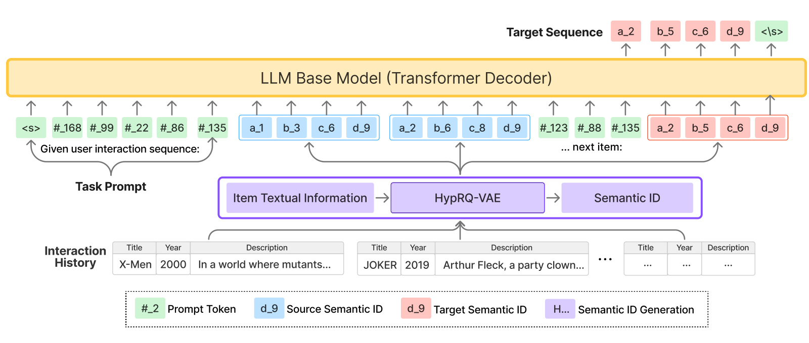
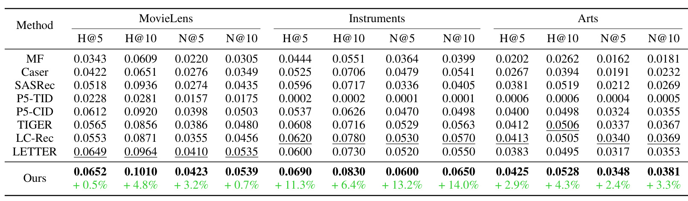
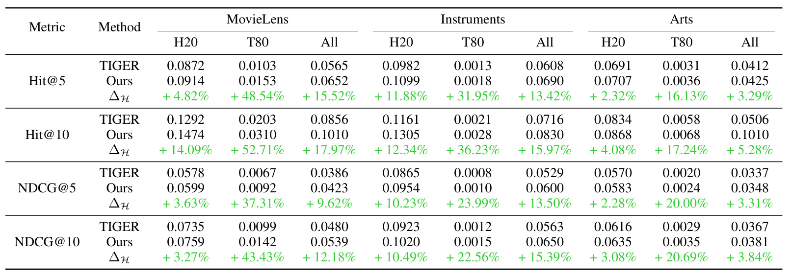
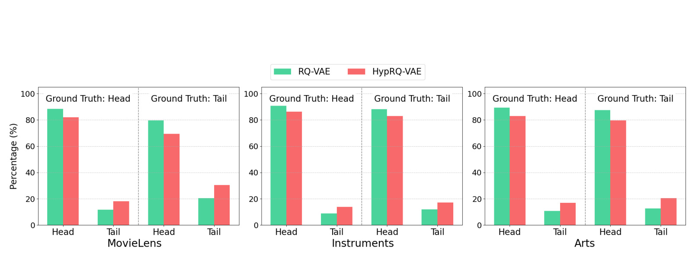
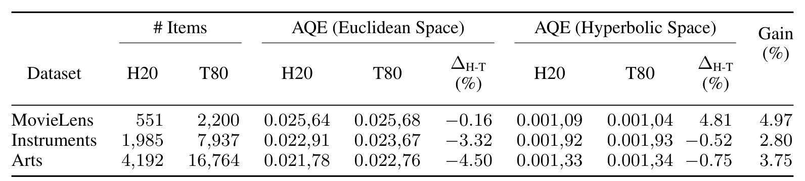
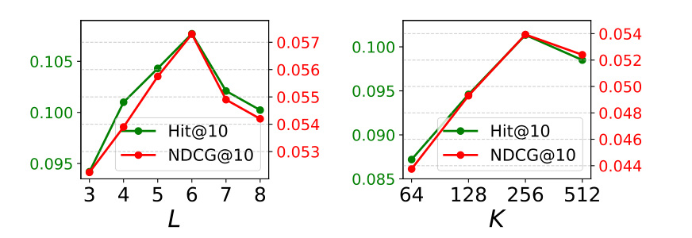

HypRQ-VAE：面向生成式推荐的长尾感知物品索引
这里精读的是论文《HypRQ-VAE: Long-Tail-Aware Item Indexing for Generative Recommender Systems》。用户给出的标题里有 “Hyperbolic RQ-VAE enhanced Generative Recommendation with Differential-Length Codebook Strategy”，和论文核心方向基本一致；但我核验 PDF 与 OpenReview 页面后，没有发现 “Differential-Length Codebook Strategy” 这个原词。论文实际提出的是 Hyperbolic RQ-VAE，并在固定长度 semantic ID 上做长度 L 与 codebook 维度 K 的消融，附录最后把“按层自适应分配容量”作为未来方向。
作者：Longfeng Wu, Tong Zeng, Giovanni Seni, Zhimin Peng, Bhanu Pratap Singh Rawat, Si Zhang, Yao Zhou, Bowen Xu, Lecheng Zheng, Bo Ji, Yujun Yan, Dawei Zhou。
机构：论文 PDF 是匿名双盲稿，OpenReview 作者页面可核验部分作者来自 Virginia Tech、Dartmouth 等；完整机构列表未核验。为便于归档，本地目录用“弗吉尼亚理工-HypRQ-VAE”。
来源与日期：OpenReview / ICLR 2026 Conference Withdrawn Submission；页面显示 2025-09-18 发布，2025-12-07 修改。PDF 标注为 “Under review as a conference paper at ICLR 2026”。
代码/项目页：PDF 和 OpenReview 摘要列出 anonymous.4open.science/r/HypRQ-VAE-6C5B；本轮于 2026-05-21 访问时跳转后返回 401，未能确认可访问代码，因此记为“未核验到可用代码”。
本地 PDF：已保存于手动笔记目录
去重状态：未发现历史重复笔记或主页页面。
0. 导读
这篇论文处理的是生成式推荐中的 item indexing 问题。传统序列推荐把用户历史表示成 item ID 序列，模型学习“下一个 item ID 是什么”。LLM 进入推荐之后，很多方法希望把推荐改造成语言生成任务，但这里有一个不自然的接口：LLM 擅长生成文本 token，而推荐系统真正要落地的是目录里的离散物品。直接让 LLM 生成标题或描述，容易产生不存在的物品；直接把原始 item ID 拆成 token，又没有语义，也会形成巨大且难学习的词表。
近几年生成式推荐常用 semantic ID 来解决这个接口问题。做法是先用一个 tokenizer 把每个 item 编成若干离散 code token，例如 <a_1><b_3><c_2><d_9>，再训练生成模型根据用户历史生成目标 item 的 code 序列。TIGER 这类方法使用 RQ-VAE 在欧氏空间里做残差量化，能把文本语义压缩为层级 token。但是论文认为，真实推荐目录天然是长尾分布：少数头部 item 占据大量交互，大量尾部 item 只有稀疏曝光，却往往承载用户的小众兴趣。欧氏空间在这种幂律结构上会更偏向头部 item，尾部 item 的表示和量化质量不足。
HypRQ-VAE 的核心想法很直接：既然双曲空间擅长表达树状、层级、幂律结构，就把 RQ-VAE 的残差量化搬进双曲空间。模型先把 item 的文本 embedding 通过 DNN encoder 得到欧氏潜向量，再用指数映射投到 Poincare ball；每一层 codebook 的 nearest code、残差更新和 code 聚合都用双曲空间里的距离、Mobius subtraction 和 Mobius addition 来完成；最后再用对数映射回到切空间，经 decoder 重构原始 embedding。这样得到的离散 code 序列既保留文本语义，又试图给尾部 item 更充足的几何容量。
从实验看，论文在 MovieLens、Amazon Instruments、Amazon Arts 三个数据集上比较 MF、Caser、SASRec、P5-TID、P5-CID、TIGER、LC-Rec、LETTER 等基线。整体指标上 HypRQ-VAE 基本最佳，真正有辨识度的是头尾拆分：相比欧氏 RQ-VAE，HypRQ-VAE 在 tail item 上的相对提升明显更大，例如 MovieLens 的 T80 Hit@10 提升 52.71%，远高于 H20 的 14.09%。这支持论文的主张：双曲几何不只是换了一个 embedding 空间，而是在 item indexing 阶段改变了模型对长尾目录的容量分配。
这篇论文对推荐工程的价值在于，它提醒我们 semantic ID tokenizer 本身就是生成式推荐的关键模型组件。很多系统会把 tokenizer 当成离线预处理，随后主要优化 LLM 或序列模型；但如果 tokenizer 对长尾 item 编码不好，后续生成器再强也会被错误或低分辨率的 item vocabulary 限制。HypRQ-VAE 的贡献不在于提出新的推荐损失，而在于把“索引空间是否匹配推荐目录结构”这个问题放到了台前。
1. 背景与问题
生成式推荐的目标不是给每个候选 item 打分后排序，而是让模型直接生成目标 item 的标识。这样做的潜在好处是统一召回和排序、复用语言模型的序列建模能力，并能把文本语义自然接入推荐任务。但它也带来一个基础矛盾：语言模型的输出空间是 token vocabulary，推荐系统的输出空间是 item catalog。二者不对齐时，模型要么生成不存在的文本，要么生成没有语义的数字 ID。
论文把已有 item identifier 大致分成几类。第一类是原始 ID 或随机 ID，工程上简单，但不能表达 item 间语义或协同关系。第二类是文本 identifier，例如直接使用标题，这能让 LLM 看到自然语言，但标题和描述通常很长，生成时也不容易严格落到目录中的唯一 item。第三类是 codebook-based identifier，也就是先训练一个量化模型，把 item 文本或多模态特征压缩为离散 code 序列，再让生成器预测 code。RQ-VAE 属于第三类，也是 TIGER 等方法的基础。
RQ-VAE 的优势在于分层残差量化。第一层 code 捕捉粗粒度语义，后续层不断量化前一层未解释的残差，因此一个 item 可以由较短的 code 序列表示，同时天然形成从粗到细的语义结构。问题是，标准 RQ-VAE 在欧氏空间里做量化。欧氏空间对均匀、局部平滑的数据很自然，但推荐目录往往不是这种结构：头部 item 语义更泛化、交互更密集，尾部 item 更分散、更稀疏、更像树枝末端的小众概念。
双曲空间的动机来自它的指数体积增长。在 Poincare ball 中，越靠近边界，空间容量增长越快，因此适合容纳大量细粒度叶子节点；靠近原点的位置可以表示更通用、更中心的概念。这和推荐里的头尾分布很契合：头部 item 可以靠近“树干”，尾部 item 可以分布到更外层的“枝叶”。论文不是第一次把双曲几何用于推荐，HGCF、HICF 等工作已经在协同过滤中探索过双曲表示；但把双曲空间用于生成式推荐的 semantic ID indexing，是这篇论文声称的新点。
论文实际要回答两个问题。第一，双曲模型能不能有效生成 item ID，而不是只做传统 embedding 召回或评分。第二，相比欧氏 RQ-VAE，它是否真的能改善长尾 item 推荐。为此，论文把每个数据集按照流行度切成 top 20% 的 H20 和 bottom 80% 的 T80，用整体指标和头尾拆分指标同时评估。
2. 核心方法
HypRQ-VAE 可以拆成两段：第一段生成 semantic ID，第二段用 semantic ID 训练生成式推荐器。第一段是本文主要创新，第二段沿用 LLM-based generative recommendation 的常规范式。
在 semantic ID 生成阶段，输入是 item 的文本信息 embedding x。模型先用 DNN encoder 得到欧氏潜向量 z_e，然后通过以原点为基准的 exponential map 把 z_e 投到 Poincare ball 中，得到双曲向量 z_h。这个 z_h 被视为第 0 层残差 r_0。之后模型有 L 层 codebook，每层 codebook 里有 K 个可学习 code vector。
每一层量化时，模型不是用普通欧氏距离找最近中心，而是在双曲空间里计算 residual 和 code vector 的距离。论文用 Mobius subtraction 表示残差更新：在第 l 层选中最近 code e_{c_l}^l 后，下一层残差变成 r_{l+1} = r_l ⊖ e_{c_l}^l。所有被选中的 code vector 再用 Mobius addition 聚合为量化表示。聚合后的双曲向量通过 logarithmic map 回到欧氏切空间，交给 decoder 重构原始 item embedding。
训练损失由两部分组成。第一部分是 reconstruction loss，约束 decoder 输出接近原始 embedding。第二部分是 RQ quantization loss，包括 codebook 更新项和 commitment 项，并使用 stop-gradient 稳定训练。论文表 5 给出的主设置是 L=4、K=256，beta=0.25、gamma=4，Stage 1 使用 Adam 训练 5000 epoch。
生成出的 semantic ID 是每层 code index 的序列。例如图 3 给出的 (1, 3, 2, 9) 会格式化成 <a_1><b_3><c_2><d_9>。这种格式有两个好处：一是不同层使用不同前缀，能让生成模型知道 token 所属层级；二是 code 序列可以被自回归模型自然生成，和语言模型的训练接口一致。
论文还处理了 semantic ID collision。多个 item 被压缩为同一组 code 时，生成器无法唯一映射回 item。已有方法常追加辅助 ID 或加均匀约束，但论文认为这些方法仍可能留下冲突，尤其当冲突 item 数超过最后一层 codebook 容量时。HypRQ-VAE 使用基于 codebook proximity 的级联重分配：对冲突 item 计算它们到各层各 code 的双曲距离，从最后一层开始分配最近可用 token；如果多个 item 争同一 token，就把距离最小的 item 分到该 token，其余 item 依次尝试下一个可用 token；如果最后一层不够，再向前一层重复。这是一个后处理式唯一化策略，不是端到端学习出的冲突消解器。
第二段是 generative recommender。给定用户按时间排序的历史 item，系统把每个 item 替换成 HypRQ-VAE 生成的 semantic ID，再把所有 code token 展平成一个序列，嵌入自然语言 prompt。模型训练目标是根据历史 semantic ID 序列生成下一个 item 的 semantic ID。论文使用 LLaMA2-7B 加 LoRA，LoRA 设置为 r=8, alpha=32, dropout=0.05，Stage 2 用 AdamW、学习率 1e-4、cosine schedule 训练 4 个 epoch。推理阶段对所有 generative model 使用 beam size 20，并做 full ranking 评估。
这里要注意，论文标题和附录容易让人误读成“差分长度 codebook 策略”。正文的实际做法仍是固定长度 semantic ID，长度 L 在主模型中是一个超参数。消融部分显示 L 从 3 增到 6 时 MovieLens 性能提升，继续增到 8 会下降，原因是自回归生成更长 code 序列会累积错误。附录最后提到未来可以按层自适应分配容量：前几层表示粗语义，可能不需要太大空间，后几层表示细粒度信息，可能需要更高容量。这更像“自适应层容量”的未来方向，而不是本文已经实现并验证的 differential-length codebook。
3. 图表解读

图 1 是论文动机图。绿色曲线表示 item popularity 的长尾分布，红色曲线表示 semantic token 也存在长尾结构。示例中 “Movie / Words” 是较粗粒度语义，而 “Beauty (2022)” 和 “Mutant (1984)” 这样的具体电影或词项位于更细粒度、更稀疏的位置。论文借这个图说明：item 交互频率和 item 语义本身都不是均匀分布，semantic ID tokenizer 如果只在欧氏空间里压缩，很容易优先照顾高频头部区域。

图 3 展示 HypRQ-VAE 的编码流程。左侧 item embedding x 经过 DNN encoder 得到 z_e，再通过 exp 进入双曲空间成为 z_h。中间四个量化层依次选中 code 1、3、2、9，并用双曲残差继续向后细化。右侧把选中 code 聚合成 z_h_hat，通过 log 回到切空间得到 z_e_hat，再交给 decoder 重构。这个图的关键是残差更新发生在双曲空间，不只是把普通 RQ-VAE 的输出投影到双曲空间。

图 4 是生成式推荐架构。上方是 Transformer decoder 基座模型，下方展示 item 文本信息先经过 HypRQ-VAE 变成 semantic ID，用户历史被写成 code token 流，再拼入 prompt。目标序列也是 semantic ID。这个设计把推荐任务转换成“给定用户历史 token，生成下一组 code token”。因此，item tokenizer 的质量直接决定生成器能否输出有效、唯一且语义合适的 item。

表 1 是整体主结果。HypRQ-VAE 在 MovieLens、Instruments、Arts 三个数据集的 Hit Rate 和 NDCG 指标上基本都达到最佳。相对最强基线，Instruments 的提升最大，例如 H@5 提升 11.3%，N@10 提升 14.0%；MovieLens 提升较小但仍有收益，H@10 提升 4.8%；Arts 上也有 2% 到 4% 左右提升。这个表说明双曲 item indexing 不只改善尾部拆分指标，也能带来整体排序收益。

表 2 是论文最核心的证据。它把每个数据集分成 H20 和 T80 后，比较 TIGER 的欧氏 RQ-VAE 与 HypRQ-VAE。尾部提升显著大于头部：MovieLens 的 T80 Hit@10 从 0.0203 到 0.0310，相对提升 52.71%；而 H20 Hit@10 提升 14.09%。Instruments 的 T80 Hit@10 提升 36.23%，Arts 的 T80 NDCG@10 提升 20.69%。这和论文的几何假设一致：双曲空间更能给稀疏尾部 item 留出表达空间。

图 5 进一步看 top-5 推荐列表中头部和尾部 item 的比例。绿色是 RQ-VAE，红色是 HypRQ-VAE。无论 ground truth 是 head 还是 tail，HypRQ-VAE 的 top-5 中 tail item 占比都更高。例如 MovieLens 在 ground truth 为 tail 的情况下，tail prediction ratio 从 20.51% 提升到 30.57%。这说明 HypRQ-VAE 不是简单让头部 item 排得更准，而是在生成候选集合时减少了对头部 item 的过度偏置。

表 3 用 Average Quantization Error 分析量化质量。论文提醒不能直接横向比较欧氏空间和双曲空间的 AQE 绝对值，因为几何尺度不同；更有意义的是看同一空间内 H20 和 T80 的差距。欧氏空间里尾部 item 的 AQE 通常高于头部 item，说明尾部表示更差；双曲空间里头尾差距被压缩，MovieLens 中尾部 AQE 甚至低于头部 AQE。这给“尾部收益来自更均衡量化”提供了量化证据。

图 6 是超参消融。左图改变 semantic ID 长度 L，性能从 L=3 到 L=6 上升，随后下降；右图改变 codebook 维度 K，从 64 到 256 上升，512 略降。这两个趋势都很有工程意义：code 太短会损失细粒度信息，code 太长会让自回归生成错误累积；codebook 太小区分不了 item，太大又可能对文本噪声过敏。值得注意的是，表 5 的主训练设置写的是 L=4, K=256，而图 6 在 MovieLens 上显示 L=6 更高，这里可能反映了默认设置与单数据集最优之间的折中，也可能需要作者代码进一步确认。
4. 实验与结果
实验使用三个数据集。MovieLens 有 6,040 个用户、2,751 个 item 和 1,000,000 条交互，密度为 6.018%；Amazon Instruments 有 24,773 个用户、9,922 个 item 和 206,153 条交互，密度 0.084%；Amazon Arts 有 45,142 个用户、20,956 个 item 和 390,832 条交互，密度 0.041%。论文过滤少于五次交互的用户和 item，按时间构造用户序列，并把最大序列长度截断为 20。MovieLens 的 item 描述来自 TMDB plot overview，Amazon 数据使用 title 和 description。
评价方式是 leave-one-out，指标为 Hit@5、Hit@10、NDCG@5、NDCG@10，并对所有 item 做 full ranking。这一点比只采样负例更严格，也更能反映生成出的 semantic ID 是否能在完整目录里找到正确 item。所有生成式模型推理时 beam size 设为 20。
基线覆盖传统序列推荐和生成式推荐。MF、Caser、SASRec 分别代表矩阵分解、CNN 序列模型和 self-attention 序列模型；P5-TID 直接使用标题作为 identifier；P5-CID 把协同信号放入 identifier；TIGER 是标准欧氏 RQ-VAE semantic ID；LC-Rec 用 Sinkhorn-Knopp 等约束缓解冲突并对齐语言知识；LETTER 结合层级语义、协同信号和 code assignment diversity。这个基线组合比较合理，因为它能同时比较“是否使用 LLM/生成式范式”和“item tokenizer 是否更好”。
整体结果显示，传统序列模型并没有被完全碾压。例如 SASRec 在部分数据集上仍有可观表现，这说明生成式推荐不是天然优势，identifier 设计很关键。P5-TID 在 MovieLens 上相对强一些，可能因为电影标题更有语义，但在 Amazon Instruments 上几乎失败，说明文本标题直接生成不够稳。TIGER、LC-Rec、LETTER 这类 codebook identifier 明显强于简单文本或原始 ID 方案，说明离散 semantic ID 是当前生成式推荐的有效路线。
HypRQ-VAE 的整体优势在 Instruments 上最明显，可能因为该数据集比 MovieLens 稀疏得多，长尾结构更突出。MovieLens 相对稠密，已有方法更容易学到头部和常见模式，因此整体提升不大；但即使在 MovieLens，tail item 的拆分提升仍非常明显。这个现象符合论文的核心假设：双曲空间的价值主要体现在稀疏、层级、长尾场景，而不是所有场景都等比例提升。
长尾分析比主表更能说明问题。论文把 top 20% popular item 视为 H20，剩下 80% 视为 T80。表 2 中，HypRQ-VAE 对 H20 也有提升，但 T80 的相对收益更高。MovieLens 的 T80 Hit@5、Hit@10、NDCG@5、NDCG@10 分别提升 48.54%、52.71%、37.31%、43.43%；Instruments 的 T80 对应提升为 31.95%、36.23%、23.99%、22.56%；Arts 的 T80 对应提升为 16.13%、17.24%、20.00%、20.69%。这说明双曲量化尤其改善了尾部 item 的可生成性和可排序性。
论文还报告 top-k 列表成分，证明模型并非只是偶然命中几个尾部 item。表 6 和表 7 显示，在 top-5 和 top-10 场景下，HypRQ-VAE 相比 RQ-VAE 会生成更高比例的 tail item。以 MovieLens top-10 为例，当 ground truth 是 tail item 时，RQ-VAE 的 tail prediction ratio 为 22.17%，HypRQ-VAE 为 32.75%。这对真实推荐生态有意义，因为如果生成式召回长期只偏向头部，后续排序再怎么调也很难给尾部 item 足够曝光。
不过，表 2 里 Arts 的 All Hit@10 似乎存在排版或数值疑点：TIGER 是 0.0506，表中 Ours 写成 0.1010，但相对提升只写 +5.28%，且表 1 中 Arts H@10 为 0.0528。按相对提升推断，表 2 这个 0.1010 很可能是误写或复制错误。这个不影响论文整体方向，但读数时应以表 1 和相对提升共同判断，不能机械引用该单元格。
5. 我的理解
我认为这篇论文最重要的贡献，是把 semantic ID tokenizer 从“工程预处理模块”提升成了“推荐系统结构假设”的承载者。生成式推荐常被描述为训练一个 LLM 或 Transformer decoder 来生成 item code，但 code 是怎么来的，往往决定了模型能否泛化到长尾 item。一个糟糕的 tokenizer 会把大量尾部 item 压在少数不稳定 code 上，生成模型再强也只能在低质量索引上学习。
HypRQ-VAE 的思路和传统推荐里“为长尾 item 做 reweighting”不太一样。它不是在损失函数里直接给尾部样本加权，也不是上线阶段强行混入尾部 item，而是在 item vocabulary 构造阶段改变几何空间。这样做的好处是比较底层：如果 semantic ID 本身更能区分尾部 item，那么召回、生成、重排和解释都可能受益。坏处是收益依赖 tokenizer 是否真的稳定训练，且系统要引入双曲几何算子，复杂度比标准 RQ-VAE 更高。
双曲空间的解释是有吸引力的，但也要避免过度神化。推荐目录确实长尾，但并非所有长尾都具有干净的树状层级；很多尾部 item 稀疏只是因为曝光不足、季节性或数据采集偏差，不一定代表语义上是某个细粒度叶节点。HypRQ-VAE 在三个 benchmark 上显示出有效性，但要在业务目录中复用，仍需要检查 item 语义、协同关系和流行度是否真的形成可被双曲空间利用的层级结构。
我也更愿意把这篇论文看作“长尾友好的 item indexing”工作，而不是完整生成式推荐框架。它没有重新设计用户序列建模，也没有提出新的在线召回服务架构；生成器部分主要是 LLaMA2-7B + LoRA 的标准自回归训练。真正值得迁移的是 Stage 1：如何从 item 文本、描述、类别或多模态特征生成一个既唯一又有层级语义的离散 ID。
另一个值得注意的点是 collision handling。semantic ID 的冲突在大规模目录中一定会出现，尤其当 item 数远大于 codebook 层级组合的有效容量，或者多个 item 文本非常相似时。论文的级联重分配能保证唯一性，但它是基于距离的后处理，可能会把某些 item 分配到次近 token，从而削弱语义一致性。生产系统中需要同时看 collision rate、重分配比例、重分配后 item 的召回质量，而不只是最终推荐指标。
关于用户提到的 differential-length codebook，我的判断是：这篇论文没有实现 variable-length semantic ID，也没有让不同 item 使用不同长度 code。它做的是固定长度 L 的 residual quantization，并用消融说明长度过短和过长都有问题。真正接近 differential/adaptive 思路的是附录最后一句未来方向：不同层可能需要不同容量，前层表示粗类别、后层表示细信息。这可以启发后续工作，例如按 item 流行度或语义不确定性分配不同长度，或让后层 codebook 比前层更大，但这些不属于本文实验证明的贡献。
6. 工程启发与复现建议
如果要复现这篇论文，我会先把任务拆成 tokenizer 复现和 recommender 复现。第一步只复现 HypRQ-VAE tokenizer：准备 item title + description embedding，搭建 encoder、双曲 projection、分层 codebook、Mobius residual update、decoder reconstruction，监控 reconstruction loss、quantization loss、code utilization、collision rate 和 head/tail AQE。只有 tokenizer 稳定后，再进入生成式推荐训练。
数据处理要严格复刻论文设置。用户和 item 至少五次交互，用户历史按时间排序，序列最长 20；MovieLens 需要补充 TMDB plot overview，否则文本 embedding 来源会和论文不同；Amazon Instruments 和 Arts 要确认使用的是 McAuley 数据版本。评估时建议使用 full ranking，而不是采样负例，否则生成式模型的真实目录约束会被低估。
双曲实现上要特别注意数值稳定。Poincare ball 中点靠近边界时，距离和映射容易出现数值爆炸，需要处理 curvature、norm clipping、epsilon、projection back to ball 等细节。Mobius addition/subtraction、exponential map、logarithmic map 最好复用成熟 manifold library 或严格单测，不建议直接把公式临时写进训练代码后就跑大实验。
semantic ID 的长度和 codebook 大小要作为业务超参调。论文主设置是 L=4, K=256，但 MovieLens 消融显示 L=6 更优，说明不同目录规模、文本质量和生成模型能力会影响最优点。一个实用做法是先固定 K=256，扫 L=3..8，同时记录 Hit/NDCG、collision rate、平均解码长度和生成失败率；再固定较优 L 扫 K=64,128,256,512。不要只看离线准确率，还要看 ID 词表大小和推理延迟。
生成器侧建议加入 constrained decoding 或 trie 校验。论文描述了 beam search 和 full ranking，但生产中必须保证生成出的 code 序列映射到合法 item。可以构建 semantic ID trie，让每一步只能生成能组成有效 item ID 的 token；对于 collision reassignment 后的 ID，也要保证映射表版本与 tokenizer 版本一致。否则模型即使命中语义相近 code，也可能输出不存在或过期的 item。
上线时需要单独监控头部和尾部。只看 overall Hit/NDCG 很可能掩盖长尾收益或损失。建议至少维护 H20/T80、不同曝光桶、冷启动 item、近 7 天新增 item 的召回率和点击率；同时监控 top-k 列表里的 tail ratio，防止模型为了优化短期准确率又退回头部偏置。HypRQ-VAE 的价值主张就是改善长尾，如果线上指标不分桶，就很难判断它是否真正发挥作用。
如果想沿着 differential-length codebook 方向继续做，可以把本文作为 baseline。一个可能扩展是对头部 item 使用较短 code，对尾部或高不确定 item 使用更长 code，以减少头部生成成本并提升尾部分辨率。另一个扩展是让不同层的 K 不同，例如前层小 codebook 表示粗类别，后层大 codebook 表示细粒度 item。但这会带来新的训练和解码问题：不同长度 ID 如何 batch、如何约束解码、如何避免长 ID 的错误累积，都需要重新设计。
7. 局限与风险
- OpenReview 页面显示该稿件为 ICLR 2026 Conference Withdrawn Submission，PDF 仍是匿名双盲稿。论文状态、作者机构和代码可用性都需要后续再核验。
- 代码链接本轮访问返回 401，无法检查实现细节。双曲算子、collision reassignment、数据切分和 prompt 模板都可能影响复现结果。
- 表 2 中 Arts All Hit@10 疑似有数值或排版错误。虽然不改变长尾趋势，但严谨引用时应避免单独引用该异常单元格。
- 论文只在三个公开 benchmark 上评估，没有线上 A/B、人群分层、类目分层或新 item 生命周期分析。离线 long-tail 改善不等于线上生态收益。
- HypRQ-VAE 主要改进 item indexing，没有解决生成式推荐中的所有问题，例如用户意图变化、会话上下文、多目标排序、业务约束和安全过滤。
- Collision handling 是启发式后处理。它能保证唯一 ID，但可能牺牲部分语义邻近性，尤其在大规模目录和大量近重复 item 中需要进一步评估。
- 双曲空间引入额外实现复杂度和数值风险。训练不稳定、curvature 设置不当或 codebook 利用不均衡，都可能抵消理论上的表示优势。
- 长 semantic ID 会增加自回归生成难度。论文消融已经显示
L过大性能下降，这意味着提升 item 分辨率和保证生成准确之间存在真实 tradeoff。
- 论文使用的文本信息主要是 title + description。对于图像、视频、商品属性、价格、库存等多模态业务特征，HypRQ-VAE 是否仍然最优还没有验证。
- 双曲空间更偏长尾并不自动等于公平。推荐更多尾部 item 可能提升多样性，也可能引入低质量、过期或不相关 item，需要结合质量和用户满意度指标判断。
8. 后续跟进
- 继续跟踪 OpenReview 或作者主页，确认是否出现非匿名 arXiv 版本、正式发表版本、机构列表和可访问代码仓库。
- 复查表 2 Arts All Hit@10 的疑似错误，优先以作者后续版本或开源代码复现实验为准。
- 在一个更大规模、更稀疏的推荐数据集上复现 HypRQ-VAE tokenizer，重点比较 collision rate、code utilization、H20/T80 AQE 和 tail recall。
- 对比 Euclidean RQ-VAE、HypRQ-VAE、Sinkhorn/uniform regularization、LETTER-style diversity regularization 的组合效果，判断双曲几何和均匀约束是否互补。
- 尝试 variable-length semantic ID 或 per-layer variable codebook size，把论文附录中的 adaptive capacity 未来方向做成可验证实验。
- 加入 constrained decoding 与非法 ID 率评估，测量 beam search 生成 code 序列时的合法率、唯一映射率和延迟。
- 用多模态 item 表示替换纯文本 embedding，观察双曲空间是否仍对长尾 item 有更强表达能力。
- 在业务评估中加入曝光公平、多样性、覆盖率、新品成长和用户长期满意度，避免只用 Hit/NDCG 判断长尾推荐价值。
9. 工程侧补充：把 HypRQ-VAE 放入生成式推荐系统
在真实系统里，我会把 HypRQ-VAE 放在离线 item tokenizer 层，而不是直接改线上排序模型。离线层周期性读取 item 文本、属性和多模态特征，训练或增量更新 tokenizer，输出 item_id -> semantic_id 映射、semantic_id -> item_id 反向映射、collision 日志和 codebook 统计。线上召回或生成模型只消费稳定版本的 semantic ID，避免 tokenizer 每天变化导致用户历史 token 序列不可比。
版本管理非常关键。只要 semantic ID 重新训练，同一个 item 的 code 可能变化，历史序列、训练样本、在线 trie 和反向映射都必须切到同一版本。推荐系统可以保留最近几个 tokenizer version，在训练、回放和线上服务中显式带上 version 字段。否则模型生成的 <a_1><b_3><c_2><d_9> 在不同版本中可能对应不同 item，问题会非常隐蔽。
我还会单独建立 codebook dashboard。核心指标包括每层 token 使用熵、top token 占比、空置 token 比例、每层 collision 数、按 H20/T80 分桶的 AQE、按类目的 code 分布，以及生成器输出中每层 token 的错误率。HypRQ-VAE 声称无需额外正则也能获得更均匀 token 分布，这一点在自己的数据上必须被持续验证。
最后，长尾推荐要和业务约束一起看。双曲 tokenizer 可能让模型更愿意生成尾部 item，但尾部 item 也可能缺库存、缺质量分、缺审核状态或商业转化差。工程上可以把 HypRQ-VAE 作为提高候选覆盖率的召回层，再让后续 ranker 结合质量、时效、价格、库存和用户约束做最终决策。这样更符合它的定位：提供更长尾友好的 item vocabulary，而不是单独承担完整推荐链路。